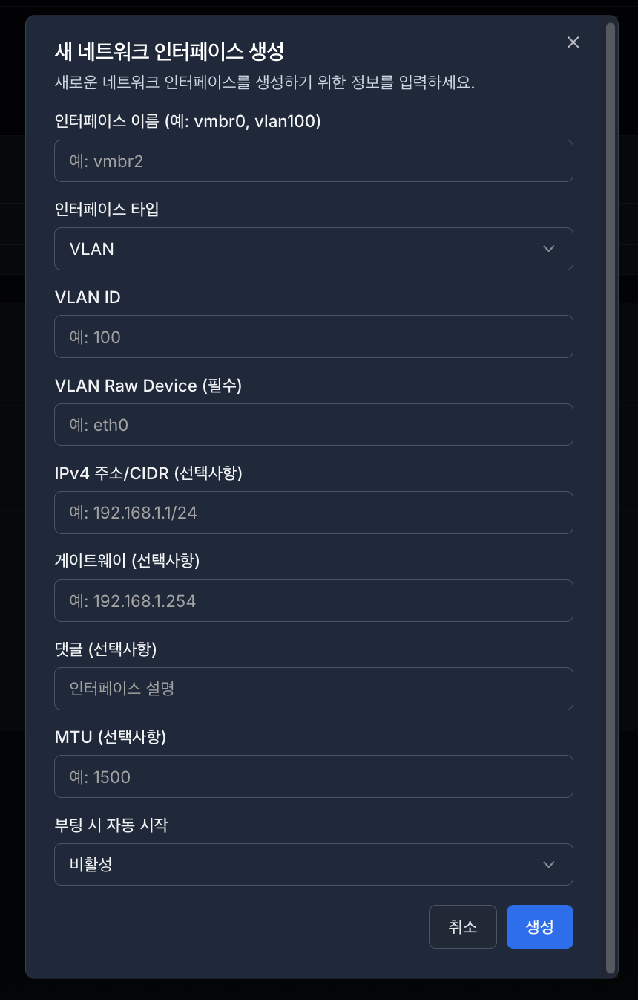
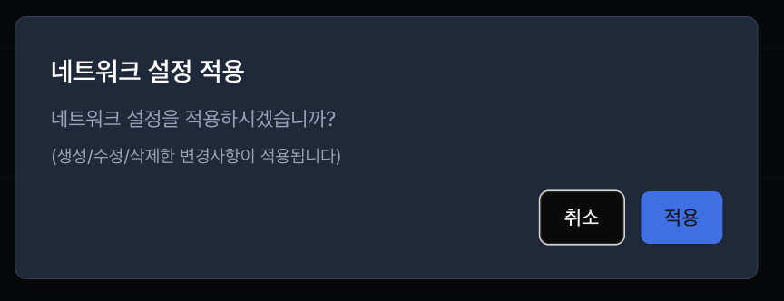
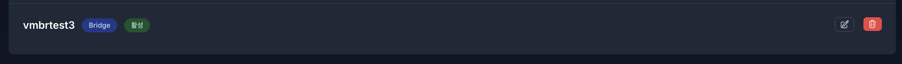
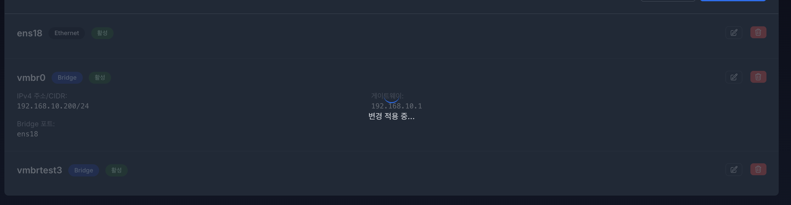
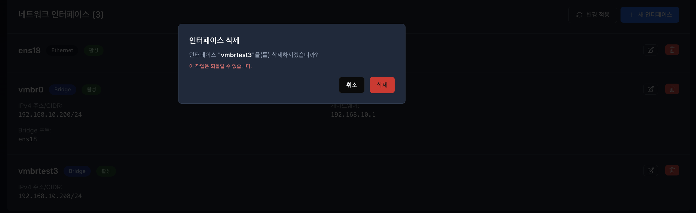
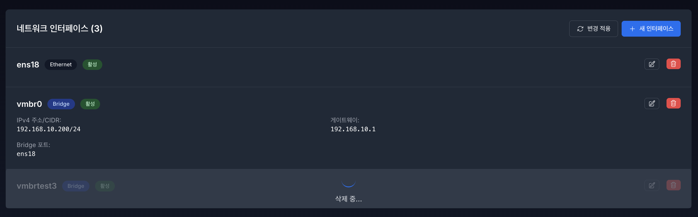

11. 네트워크 (Network)#
네트워크 관리 기능은 서버의 물리적 인터페이스와 가상 머신(VM) 간의 통신 경로를 통합적으로 설정하고 제어하는 도구입니다. 복잡한 리눅스 네트워크 구성을 GUI 환경에서 직관적으로 관리하여 인프라의 통신 안정성을 확보합니다.

11.1 네트워크 인터페이스 설정#
네트워크 인터페이스는 구성되어 있는 클러스터의 첫번 째 노드의 인터페이스 부터 로드 됩니다.
**구성되어 있는 클러스터(노드)**를 선택 후 해당 노드의 네트워크 인터페이스 목록 조회가 가능합니다.
노드 목록이 안보일 시 로그인 재 확인이 필요합니다.
(로그인이 안되어 있을 시 노드 목록을 안보입니다.)
11.2 인터페이스 관리 - 새 인터페이스(네트워크) 생성#

Bridge 타입#
인터페이스 이름
영문, 숫자만 생성 가능합니다.
이름만 입력 후 생성 가능합니다.
Bridge 포트 (선택사항)
브릿지에 연결할 물리 포트를 선택합니다.
ex) eth0, eno1, ens1
IPv4 주소/CIDR (선택사항)
IP주소 입력시 CIDR입력 필수 - *미입력 시 생성 제한합니다.
게이트 웨이 (선택사항)
외부 네트워크 접근 필요 시 설정합니다.
댓글 (선택사항)
사용자의 구분을 위한 Comment(메모)
MTU (선택사항)
한번에 보낼 수 있는 데이터 패킷의 최대 크기입니다.
기본값은 1500입니다.
부팅 시 자동 시작 (autostart)
서버 부팅 시 해당 인터페이스를 자동으로 활성화 하는 기능입니다.

VLAN 타입#
인터페이스 이름
영문, 숫자만 생성 가능합니다.
이름만 입력 후 생성 가능합니다.
VLAN ID
태그번호 분류 위합니다.
범위: 1~4094
기본값: 1
중복 불가능
VLAN Raw Device(필수)
VLN이 기반할 물리 포트 입니다.
포트가 활성화 되어야 합니다.
하나의 포트에 여러 VLAN 가능 합니다.
IPv4 주소/CIDR (선택사항)
IP주소 입력시 CIDR입력 필수 - *미입력 시 생성 제한 합니다.
게이트 웨이 (선택사항)
외부 네트워크 접근 필요 시 설정합니다.
댓글 (선택사항)
사용자의 구분을 위한 Comment(메모)
MTU (선택사항)
한번에 보낼 수 있는 데이터 패킷의 최대 크기입니다.
기본값은 1500 입니다.
부팅 시 자동 시작 (autostart)
서버 부팅 시 해당 인터페이스를 자동으로 활성화 하는 기능입니다.

Bond 타입#
인터페이스 이름
영문, 숫자만 생성 가능합니다.
이름만 입력 후 생성 가능합니다.
Slaves (선택사항)
Bond에 포함할 물리 포트들
최소 2개 필요
공백으로 구분:
"eth0 eth1"또는"eth0 eth1 eth2”한 포트는 한 인터페이스만 사용 가능합니다.
Bond Mode (선택사항)
Active-Backup: 안정성 우선 (권장)
스위치 설정 불필요
간단한 구성
802.3ad (LACP): 성능 우선
스위치가 LACP를 지원해야 합니다.
대역폭 증가
고성능 네트워크용
IPv4 주소/CIDR (선택사항)
IP주소 입력시 CIDR입력 필수 - *미입력 시 생성 제한합니다.
게이트 웨이 (선택사항)
외부 네트워크 접근 필요 시 설정합니다.
댓글 (선택사항)
사용자의 구분을 위한 Comment(메모) 입니다.
MTU (선택사항)
한번에 보낼 수 있는 데이터 패킷의 최대 크기입니다.
기본값은 1500입니다.
부팅 시 자동 시작 (autostart)
서버 부팅 시 해당 인터페이스를 자동으로 활성화 하는 기능입니다.
11.2.1 변경 적용 - Apply Configuration [ 🔄 변경 적용 ]#

네트워크 생성시 비활성화 상태로 표시됩니다.


네트워크 활성화
변경 적용 버튼 클릭 시 변경 적용중이 표시됩니다.

활성화된 네트워크 상태 표시 변경
11.2.2 네트워크 수정 - Edit#

각 네트워크 인터페이스 우측에 수정, 삭제 버튼이 있습니다.

해당 네트워크의 수정버튼을 클릭하면 설정되어있는 네트워크의 정보를 불러옵니다. ex)vmbrtest3
IPv4 적용 예시
수정할 정보 입력합니다.

수정 버튼 클릭 시 변경 적용중이 표시됩니다.

수정된 네트워크의 정보를 확인합니다.

11.2.3 네트워크 삭제 - Remove 🗑️#
해당 네트워크의 삭제버튼 클릭 시 확인 알림창이 표시 됩니다.

삭제 버튼 클릭시 해당 네트워크 인터페이스 삭제 중으로 표시됩니다.

네트워크 인터페이스 목록을 확인합니다.